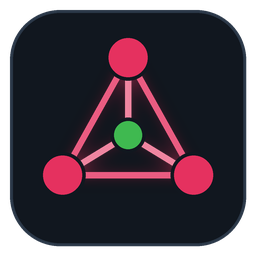

PiMeshLooking for PiMesh...
PiMesh runs in the background on each Pi, so it has to be started first.
sudo ./install.sh in this folder once on every Pi. They find each other automatically and it starts on every boot.Any Pi in the mesh shows the whole mesh. Type one's address:
This page keeps checking and jumps to PiMesh as soon as it's running here.